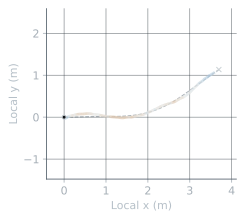
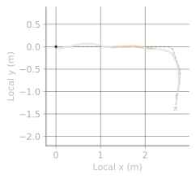
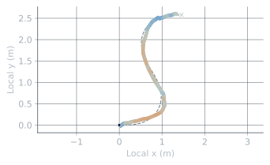
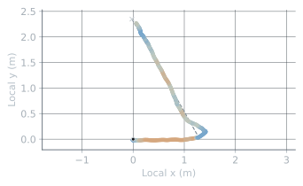
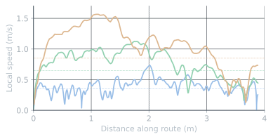
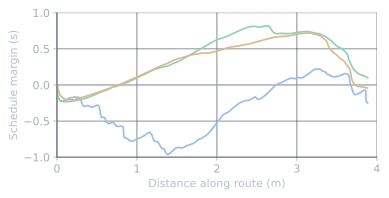
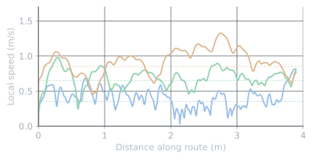
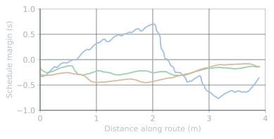

Path Diff
Path-Conditioned Diffusion Policies
for Quadruped Locomotion
From velocity-conditioned demonstrations to
route, posture and timing control.
Illustrative simulation at a requested mean of 0.55 m/s.
Ongoing research · SOLO12 in Isaac Lab · Simulation results
Overview
Abstract
Diffusion policies provide a framework for learning locomotion behaviours from offline demonstrations. Existing approaches typically use target velocities or skill commands, while following a route with posture and timing requirements calls for a different task interface. We investigate a path-conditioned diffusion policy for the SOLO12 quadruped, using route geometry, desired base height and target average speed as inputs, without specifying a local speed profile or skill identifier.
We collect trajectories from velocity-conditioned walking and crouching experts and relabel them with the paths followed and mean speeds achieved. The policy is trained through offline imitation and refined using Diffusion Policy Policy Optimization (DPPO). Experiments in Isaac Lab show that imitation produces a response to the task inputs and refinement improves tracking and joint task completion. Comparisons with a frozen-expert hierarchy and Gaussian imitation with PPO examine the trade-offs in tracking, posture changes and task coverage.
Method
From velocity demonstrations to path-conditioned control
The route specifies a spatial path and desired base height along it.
The requested average speed sets a completion time, not a local speed profile.

Relabel recorded motion
Two-second windows are labelled with the XY path followed and mean speed achieved. We retain the recorded height commands, observations and actions. No path-following expert is required.
Imitation and refinement
Offline imitation trains the policy to predict recorded actions from the relabelled inputs. DPPO then refines it in simulation, with rewards for route tracking, posture and timing.
Act and replan
Robot history, local path and height targets, and timing feedback condition eight predicted actions. Four are executed at 50 Hz before replanning at 12.5 Hz.
Closed-loop comparisons
Direct control and frozen experts
Each set uses the same route, posture profile and requested mean speed.
The clips illustrate individual executions; the tables aggregate evaluation runs.
Loading comparison
Loading comparisons…
Path Diff and Gaussian generate action chunks at 12.5 Hz. The hierarchy selects an expert and velocity command at 5 Hz; all apply joint targets at 50 Hz. Videos and evaluation traces are separate rollouts, not exact replays.
Learning the task
Imitation and online refinement
The offline policy produces locomotion and responds to the new inputs, but rarely meets all requirements together. Refinement improves joint completion on the original report benchmark.
Original I2R experiment, separate from the comparative bank below. Adherence combines the original task criterion with active lateral RMSE ≤10 cm. Refined values average three online runs sharing an offline prior; the imitation row is the initial policy.
Comparative results
Tracking, completion and posture composition
The main table uses moderate-speed requests on the four base route families.
Higher-speed requests and geometry-stress tests are reported separately.
Loading evaluation bank…
Mean across three online runs per controller; all attempts in each displayed block are retained. Core and repeated blocks use different requested speeds and should not be subtracted to estimate a composition effect. Original task pass checks arrival, terminal pose, mean speed and average height; tracking-gated pass adds active CTE RMSE ≤10 cm. Active errors include available partial trajectories. Green marks the largest pass-rate mean where the methods differ, not statistical significance.
Support and protocol. These conservative requests are a post-hoc development subset, not proof of identical training support. Crouch was deliberately underrepresented at high speeds in Path Diff's data, and its online constant-crouch requests stopped at 0.4 m/s. The hierarchy retains access to the expert. Decision rates, checkpoint selection and initialization drift also affect the comparison.
Full bank: every tested speed, posture and method ↗Spatial posture control
Posture changes along the route
Height traces show the response to a single change and to four successive changes.
We evaluate the intermediate sections as well as arrival at the goal.
One change
0.25 m/s · four base families
Four successive changes
0.35 m/s · complete 4 m routes
Lines average recorded route responses within each actor, then across three actors per method. Shading spans available actor means, not a confidence interval. Means use observed samples only; missing tails are not extended. These traces do not correspond exactly to the individual videos.
A closer look at the repeated profiles
Eight base-family routes per starting posture and actor. The retrospective all-section diagnostic requires spatial height MAE ≤4 cm in every section, including transition response. It retains every attempt but uses exploratory coverage conventions; it is not a validated task-success or smoothness metric. No winner is assigned to this diagnostic. Full definition →
Route-level timing
Controlling route-average speed
The robot may slow down during a turn or crouch section and recover time elsewhere. The speed input reflects the average pace still needed over the remaining route.
bt = clip(L − stmax(T* − t, Δt), 0, 1.5)
T* = route length / requested mean speed. The 1.5 m/s limit bounds the conditioning input, not actual robot speed.
Local pace on different geometries
Walking · requested mean 0.65 m/s
Coherent smooth

Mean 0.66 m/s · CTE 3.1 cm
Rounded waypoint

Mean 0.65 m/s · CTE 3.3 cm
S-curve

Mean 0.64 m/s · CTE 4.5 cm
Corner

Mean 0.65 m/s · CTE 5.2 cm
Speed and timing through a posture change
Same route · height changes at 2 m
Walk to crouch


Crouch to walk


Keeping the trained actor fixed, we replace timing feedback with the fixed requested mean, then shuffle that request across tasks. This tests dependence on the temporal input, not independently trained timing representations.
Original report: 24 paired routes and 144 attempts per setting. Adherence retains all attempts; mean-speed MAE is conditional on first arrival. The same actor is used in all three settings.
Geometry and scope
Base routes and geometry-stress tests
The bank includes new draws from the base generators and separately constructed arcs, S-curves and corners. Novel geometry and unsupported speed requests are different kinds of generalization; we do not pool them into a shared OOD claim.
Interpretation
Scope and limitations
The experiments examine how motion collected for velocity control can be reused for route, posture and timing control. Task completion, tracking and posture composition do not always improve together: an arrival can hide an incomplete posture sequence, and lower lateral error does not imply better performance on every task.
All imagery and results shown here are simulated. The comparative bank has been used for development and visual inspection. The three Path Diff runs share an offline prior; they do not represent independent data-collection and imitation runs. This comparison does not establish that diffusion is necessary, that all hierarchies have abrupt transitions, or that the smoothest-looking motion is the most accurate.
Independent testing, a timing audit of the hierarchy and physical-robot validation remain outstanding. Transition smoothness and controllable intermediate heights are questions to measure, not claims established by these videos.
BibTeX
To reference this project page:
@misc{pathdiff2026,
title = {Path Diff: Path-Conditioned Diffusion Policies
for Quadruped Locomotion},
year = {2026},
howpublished = {Project page},
url = {https://stargix.github.io/path-diff/}
}Some experimental data could not load. Please reload the page.